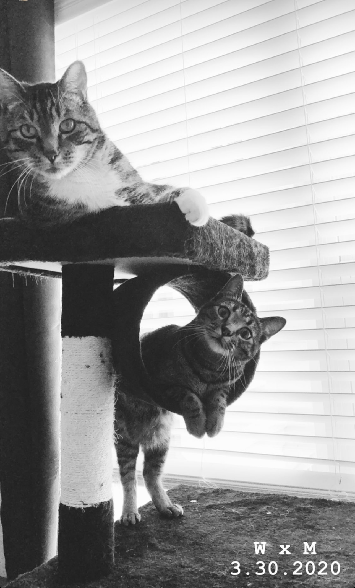

G$'s Pets
Over the years growing up, my family has had many-o-cats. Some were lost to the coyotes that we had, and
whenever
this would happen, it was incredibly sad. However, because we typically always had two cats, we couldn't stand
having the one still with us become lonely. The cats that I share with you here are the three cats that have
been my
own in my adult life. The first cat that I ever got on my own I named Wiz. The second cat that I'd gotten with a
girlfriend we named Mochi. And now, after Wiz had passed, we have gotten a new little kitty who we named Moana.
This is a photo of Wiz and Mochi together when we were living in Houston. Both of them loved how warm it was!
